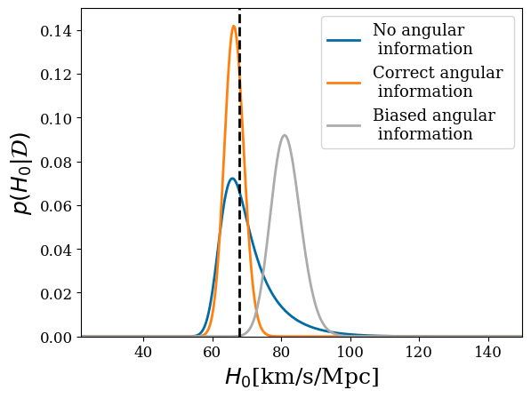
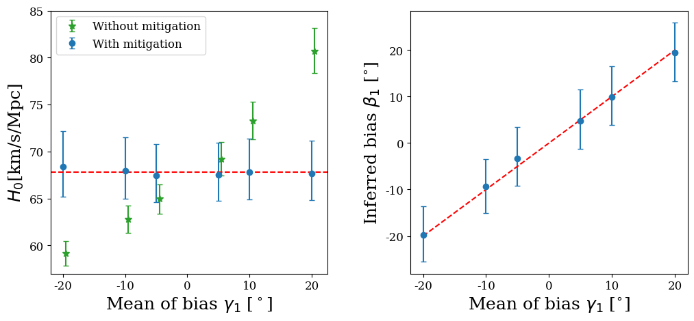

Research / 2024
Mitigating the binary viewing angle bias for standard sirens
The Astrophysical Journal Letters, 974, L16, 2024.
In brief
Information about a binary’s viewing angle can sharpen a gravitational-wave distance measurement, but an incorrect angle can bias the inferred Hubble constant. We develop a framework that infers the population’s viewing-angle bias together with cosmology. Tests with simulated neutron-star mergers show that the method can reduce systematic error below statistical uncertainty, including when the simulated bias distribution differs from the assumed model.
Selected figures
Click any plot to view it at full size.
Why viewing-angle bias matters

Recovering an unbiased measurement

Figures from the original paper (arXiv:2406.11126v2) by Salvarese, A., & Chen, H.-Y. Captions are short explanatory summaries.
← Back to all publications